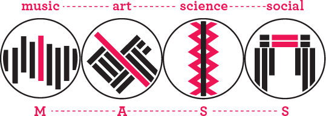

MASS collective LLC is copyright 2014.
MASS is an acronym for music, art, science, and social. We are an organization that thrives on good ideas with creative, professional, and inventive by-products. As a collective we are a social group, thus everyone involved with a project will collaborate on some level. Whether it is an installation in which a Tesla Coil is synced to the chords of a guitar, or a light painting that is controlled by a typographically directed A.I. robotic arm; there is something for every profession to work on. While the organization itself is laid-back, it is always alert to new, interesting, and thought provoking ideas. No matter what comes from MASS it will always turn a few heads. The purpose of MASS collective as a whole is to enrich the community and the world’s creative resources for collaboration and innovation through free exchange of ideas and resources. We pursue this goal through creative commons licensing, open source models and retention of intellectual property rights. We achieve this through providing the skills, tools, information, and other resources to thrive intellectual, creative and professional pursuits. By this we hope to create a generation of self-starter individuals and a sense of independence with confidence in an individuals ability to pursue this modern renaissance effectively.
To put it another way, let’s say you have an idea. However, you lack the resources that are necessary to manifest the idea into reality. Well, that’s where we come in. Through the toolkit that is MASS, we can help you by offering the know-how, the people, the tools and the equipment to bring your idea to life. We thrive as an organization through the support of our members. Individuals utilizing MASS are encouraged to seek help from each other and thus drawing from and adding to the toolkit. Through this exchange, members gain access to a wide and varied array of skills and resources. These individuals source each other and every party gains as a result. This means, members are able to support each other through exchange of ideas, techniques, and skills. The benefit of this type of exchange through collaboration based on skill-sets means members get new perspectives on their work. Collaboration with other members will help develop their idea and push them to consider aspects of it they had not previously thought about. Members also have the ability to use many of MASS’ media outlets to spread the word about their project. All in all, MASS works as a facilitator of collaboration for growth.
MASS collective’s facilities are composed of two stories. The building itself houses all of the tools, space, and people one would need for creating a large or small-scale project. We pride ourselves on our building and it shows in just how well it’s planned out. Our building is located in the heart of Castleberry Hill at 364 Nelson St SW Atlanta, GA 30313, so drop by and see what is going on.
MASS collective LLC is copyright 2014.